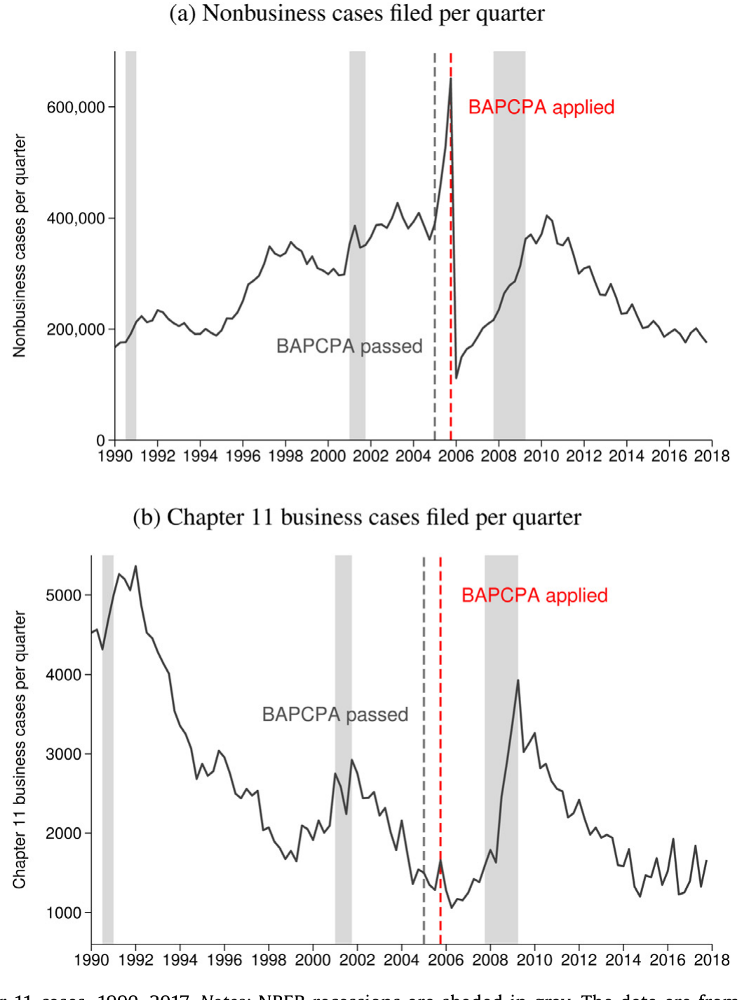
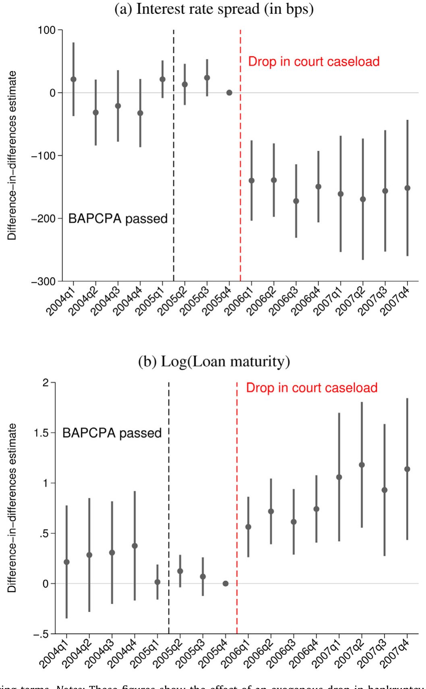
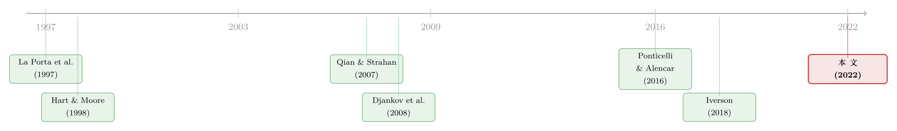

法官太忙，借钱就贵：一座拥堵的破产法庭如何写进你的贷款利率
本文读的是 Müller (2022, Journal of Financial Economics)：作者借 2005 年美国消费者破产改革（BAPCPA）带来的「史上最大一次法官案件量骤降」，识别出破产法庭的拥堵程度会被债权人事前地定进贷款合约——法庭越闲，企业进出破产的时间越短、债权人回收得越多，于是利差下降约 20 个基点（≈10%）、贷款期限拉长 9%。一个粗略的外推是：拥堵的破产法庭每年让美国企业多付 至少 7.4 亿美元 的利息。
1 一句被忽略的常识
我们都「知道」一件事：一个国家的破产制度好不好，会影响企业能不能借到钱、借得贵不贵。教科书里写满了这条逻辑——更强的债权人保护、更高效的债务执行，对应着更发达的金融体系。La Porta 等人 1990 年代那串经典论文奠定了这个信念，后来 Djankov 等人 (2008) 用 88 个国家的代表性破产案例又把它钉得更实：债务执行越有力，信贷市场越发达。
但这里藏着一个让人不安的缝隙。
跨国相关性固然漂亮，可它不是因果。一个地区的法庭之所以拥堵，往往恰恰是因为这个地方穷、公共财政紧、违约率高——而这些东西本身就会让信贷又贵又难。换句话说，「法庭拥堵」和「借钱贵」可能只是同一个病根长出的两片叶子，谁也没真的导致谁。正如作者一针见血指出的：缺钱雇法官的地区，往往同时拥有更挤的法庭、更高风险的企业、更贵的信贷——哪怕这三者之间根本没有任何因果链。
于是一个非常具体、却几乎没人能干净回答的问题浮了出来——
2 研究问题
在破产法本身一个字都没改的前提下，仅仅是「法官更忙 / 更闲」这件事，会不会改变企业事前能拿到的贷款条款？
注意这个问法的克制。它不是问「破产法改革值不值钱」——那个问题 Ponticelli & Alencar (2016) 在巴西、Rodano 等 (2016) 在意大利都研究过，但他们度量的是法律制度被根本性重写的价值。本文要问的是更细、也更难的一层：在法律框架完全不变的情况下，单纯的「司法工作量」本身有没有价格。 这是一个关于法庭运行效率、而非法庭规则的问题。
要回答它，你需要一个几乎不可能凭空找到的东西：一次只动法官工作量、不动破产法、又和当地经济基本面无关的外生冲击。
接着，一个自然的问题是——这种冲击，去哪儿找？
3 识别策略：一场「只砍消费者、不碰企业」的改革
真正关键的一步，是作者抓住的这个制度细节。
2005 年，小布什签署了《破产滥用预防与消费者保护法》(Bankruptcy Abuse Prevention and Consumer Protection Act, BAPCPA)。这部法律的火力几乎全部对准个人债务人：它让消费者申请 Chapter 7（清算、债务一笔勾销）变得又难又贵——引入「收入审查」(means test)、把收入高于州中位数的人往 Chapter 13（需要拿未来收入还债）赶、Chapter 7 律师费和申请费各涨约 50%。后果是戏剧性的：法案生效后两年里，破产申请量几乎腰斩，是 1899 年有记录以来除战争时期外最大的一次下降。
而这恰恰是巧妙之处——BAPCPA 基本没碰企业破产。代表大企业重整的 Chapter 11 申请量，在改革前后几乎没有任何趋势变化（这一点看 Figure 2 一目了然）。

Figure 2: Nonbusiness and Chapter 11 cases, 1990–2017. Notes: NBER recessions are shaded in gray. The data are from the United States Court System
为什么这件事能用来做识别？请跟着这条逻辑走：
第一步，破产法庭的工作量是「加权案件量」(weighted caseload)——不同案件按耗时加权。Chapter 11 平均一件要法官花约 8 小时，而消费者 Chapter 7 平均只要 6 分钟。改革砍掉的是海量消费者案件，于是法官的总工作量应声而落。Figure 1 里那条曲线讲得很清楚：2004–2005 年法官年均工作量约 1059 小时，到 2006–2007 年骤降到约 566 小时——这是和平时期史上最大的一次百分比降幅，且是永久性的（直到 2015 年才因金融危机的余波回到 2006 年水平）。
第二步，也是全文的支点：各破产辖区受到的冲击大小不一样。一个辖区改革前的「非企业申请占比」(nonbusiness share) 越高，它的案件量里被 BAPCPA 砍掉的部分就越大，改革后法官腾出的时间就越多。于是「改革前非企业占比」就成了一把天然的处理强度尺子：占比高的辖区是「重度处理组」，占比低的是「轻度处理组」。
作者沿着 Iverson (2018) 的洞见，把它做成一个 双重差分 (difference-in-differences, DiD) 设计。第一手的「first stage」结果是：辖区非企业占比每高一个标准差，改革后法官年工作量就多降 64 小时——差不多两个工作周。
但真正关键的一步在于，作者还得说服你：这把尺子是「干净」的。这里他给出了三道防线：
- 改革前，「非企业占比」与企业和贷款的可观测特征几乎正交——也就是说，高曝险辖区的企业，事前看起来和低曝险辖区的没什么系统差别。这让「我其实在捕捉辖区间的潜在差异」这种担忧变得不太站得住脚。
- 改革前贷款条款在高/低曝险辖区平行变动（平行趋势成立），直到 BAPCPA 的不确定性消散后才分叉。
- 作者还利用了一批「不得不在改革前后展期旧贷款」的借款人（参照 Almeida 等, 2012 的思路）做了预先决定的变异，结果指向：效应完全由信贷供给驱动，而非企业自身的未观测冲击。
一个反直觉的细节：理论上，「论坛购物」(forum shopping，大企业可挑在哪个辖区申请破产) 如果起作用，应该让作者低估法庭拥堵的效应——因为更闲的法庭按 Gennaioli & Rossi (2010) 的逻辑会更「债务人友好」，反而恶化合约条款。可作者发现的是相反方向，且剔除最可能玩论坛购物的企业后结果不变。这等于说：他报告的效应，很可能是个保守的下界。
4 数据
口径很标准，也很扎实：
- 贷款合约：Thomson Reuters 的
DealScan，合约层面的银团贷款数据。核心变量是利差（通常相对 LIBOR）、贷款期限（月数取对数）、贷款规模（取对数），以及是否有抵押的虚拟变量。 - 资产负债表：年度
CompustatFundamentals，按文献惯例剔除金融、房地产与受管制的公用事业。 - 评级：
Mergent FISD。 - 法庭数据：美国法院系统与 Federal Judicial Center (2019)，覆盖 1990–2017 的加权案件量。
观测单位是「贷款合约」，样本环绕 2005 年改革前后。
5 一个把直觉讲清楚的简单框架
在跑回归之前，作者先用一个 Hart & Moore (1998) 精神的简单框架，把「为什么法庭拥堵会被定进利差」这件事讲透。我们不必照搬它的全部代数，但有一条核心的定价直觉值得显式地拆开。
债权人给一笔贷款定的利差，归根结底是在为「预期损失」要补偿。最朴素地说，预期损失 ≈ 违约概率 × 违约损失率，而违约损失率又等于「1 − 回收率」。法庭拥堵影响的，恰恰是回收这一端：法庭越挤，企业在破产里耗的时间越长，资产边拖边贬值，债权人最终拿回来的越少。于是这条链条是——
法庭拥堵 ↓ → 破产耗时 ↓ → 回收率 ↑ → 违约损失率 ↓ → 利差 ↓。
把这条逻辑写成一个最精简的定价恒等式，它的各部分含义如下：
这个框架立刻给出两个可检验的、且方向相反于「天真直觉」的预测：
- 法庭变闲，主要是通过 LGD（回收） 这一端压低利差，而不改变 PD。
- 既然作用在
PD × LGD这个乘积上，那么效应应当几乎只对 PD 高、且 LGD 高的借款人显著——对又安全、违约了也亏不了多少的企业，法庭闲不闲根本无所谓。这等价于说：法庭拥堵下降会缩小风险borrower与安全borrower之间的条款差距。
记住这两点，下面的实证就有了「该往哪看」的地图。
6 主要结果：被定进合约的那两周
首先看「机制端」。 那 64 小时的工作量下降，带来了：破产案件长度缩短 5.5%，债权人回收率上升 6%–12%。法庭确实变得更「快」、更「值钱」了。
接着是核心的「价格端」。 用 DealScan 的合约数据，作者估计：一个标准差的法庭拥堵下降，让贷款利差下降约 20 个基点——相对均值是约 10% 的降幅；同时贷款期限拉长约 9%。这正是框架预测的方向：回收预期改善，被债权人事前地、前瞻性地写进了利率和期限里。
Figure 4 的事件研究图把「前瞻性」这件事画得很生动：

Figure 4: Court congestion and financing terms. Notes: These figures show the effect of an exogenous drop in bankruptcy court caseload on loan terms
图里有个耐人寻味的动态。一开始，只有短期贷款的利差下降——因为 2006 年初的案件量骤降，对短期限内的预期回收是最有信息量的信号。到 2007 年底，长、短贷款的效应才收敛到一起。作者由此读出一个深刻的解读：债权人是把可观测的法庭拥堵当作一个关于未来回收率的噪声信号，并随着时间推移逐渐学习——这次骤降到底是永久的，还是暂时的。这种「随消息到达而调整合约」的前瞻行为，通常我们更多在股票市场里看到，而这里它发生在了银团贷款的定价上。
然后是最能定性的「反转」。 如果法庭变闲只是降低了企业的违约风险，那它和「信贷供给扩张」就不好区分。于是作者去看杠杆和违约风险：
- 账面杠杆 (book leverage) 随一个标准差的拥堵下降上升约
2%（相对均值）——企业借得更多了。 - 但信用评级、「是否被评级」的概率、以及企业破产数量，全都得到一个精确估计的零。金融危机期间的破产频率同样没动。
这个组合拳很关键：杠杆上去了，违约风险却没上去。原因正是框架所说的——虽然借得更多，但更低的债务服务负担又把违约风险压了回来。两相抵消，事前和已实现的违约概率都没变。真正变的，是预期违约损失（LGD），而它被债权人即时地定进了价格。这就把「这是一次信贷供给冲击、而非需求或风险的变化」坐实了。
最后是那记「绝杀」级的三重差分。 利用改革前借款人特征的异质性，作者做了一个 三重差分 (triple-difference)：他发现法庭拥堵几乎只对违约概率高、且预期违约损失高的企业起作用。这不仅完美对上了框架的第二个预测，更带来一个识别上的巨大红利——他可以放进「破产辖区 × 时间」固定效应，从而把同一辖区、同一时点上所有可能的混杂因素（比如当地经济周期、房地产景气）一举吸收掉。
主要的稳健性检验也都站得住：2007–08 金融危机前的房地产繁荣不是驱动力（BAPCPA 曝险与关键房产变量不相关，剔除证券化贷款或建筑/非贸易品行业、加入「放款人 × 年」固定效应，点估计都几乎不动）；事件研究显示的是一个断点式、永久性的效应，而非繁荣—萧条的周期模式；改革对企业破产的那几处微小改动也不是源头（对「明显不受这些改动影响」的企业，估计值几乎一样）。
7 文献脉络
把这篇论文放回它生长的那条藤蔓上，故事是这样长出来的。
最早，是「法与金融」(law and finance) 那一脉：La Porta 等 (1997, 1998) 用跨国比较确立了「法律制度塑造金融发展」的范式；理论侧，Hart & Moore (1998) 给出了基于债务不可让渡性的违约与重新谈判模型，为后来一切关于「回收、清算、重整」的定价提供了骨架。
接着，文献从「法律条文」走向「合约价格」：Qian & Strahan (2007)、Bae & Goyal (2009) 证明更好的债权人权利对应更低的贷款利差；Djankov 等 (2008) 用 88 国数据把「债务执行 → 信贷发展」钉实。但这些都是相关性，且大多依赖跨国比较。

然后，一支更「准实验」的文献开始追问：法律改革的效果，是否取决于既有的司法拥堵水平？Ponticelli & Alencar (2016) 在巴西、Rodano 等 (2016) 在意大利分别给出证据——可它们度量的仍是法律被改写的价值。
而真正给本文递上钥匙的，是 Iverson (2018)：他指出 BAPCPA 是一次对「改革前非企业破产占比最高的法庭」的工作量冲击，并证明拥堵下降减少了重复申请、缩短了大企业在庭时间、降低了银行的企业贷款核销。Iverson 看的是事后效应。
本文所处的位置，就是把这条链条往事前推进了决定性的一步：在破产法一字未改的前提下，单纯的司法工作量本身，会被前瞻的债权人定进事前的合约条款。这是据作者所知，第一个关于「法庭拥堵如何影响事前合约结果」的因果估计。（关于「债权人权利的改变如何传导到信贷供给」，可对照参见《一份抵押品，借出四遍半的钱》；而关于 Hart-Moore 式「债务作为谈判筹码」的另一条延伸，可参见《债，竟成了老板谈判桌上的底牌》。）
8 那 7.4 亿美元是怎么算出来的
作者最后做了一个坦诚标注为「需要一组强假设」的封底估算 (back-of-the-envelope)。逻辑是：美国非金融企业每年要为债务支付约 4000 亿美元利息；利差的变化可以自然地映射到这个宏观量上。顺着估计的利差效应外推，他得到：拥堵的破产法庭每年给借款企业带来的成本约为 7.4 亿美元。
这个数字本身不直接等于福利损失，但它有一个很「政策」的对照系：相比新设法官席位的成本，它大得多。换句话说，破产法官可能是相对「便宜」的——至少就替借款人省下的债务服务支出而言，他们的价值远超其成本。考虑到 1980 到 2010 年间案件量涨了 381%、法官席位只涨了 53%、人均案件量翻到 3.1 倍，而新设法官席位需要参众两院立法通过（上一次永久性增设还要追溯到 1992 年）——这篇论文等于给「该不该多请几个破产法官」这个问题，递上了一份带价格标签的答卷。
9 评论与延伸（Q&A + 研究方向）
(a) 几个可能的疑问
Q：处理强度用「改革前非企业占比」，会不会其实只是在捕捉「穷辖区 vs 富辖区」？
这正是作者最警惕的点，也是他三道防线要回答的。关键证据有二：一是非企业占比与企业/贷款的可观测特征事前正交；二是三重差分让他能塞进「辖区 × 时间」固定效应，把辖区层面一切随时间变化的混杂（含当地经济、房地产）整体吸收掉，结果依然成立。这比单纯的 DiD 干净得多。
Q：杠杆上升了，凭什么说违约风险没变、这是供给冲击而非企业自己想多借？
因为评级、被评级概率、企业破产数量、危机期破产频率全是精确的零。如果是需求侧（企业基本面变好想扩张），你很难同时看到杠杆升、风险却纹丝不动。框架给的解释是：借得多抬高风险，债务负担降低又压回风险，两者抵消——动的只有 LGD。
Q：利差只降 20 个基点，会不会经济上无关紧要？
20 基点相对均值是约 10% 的降幅，量级不小；期限同时拉长 9%。更重要的是，三重差分显示这 20 基点不是均匀摊开的，而是集中砸在高风险、高损失的借款人身上——对这批企业，影响远大于平均数。
Q：BAPCPA 也对企业破产做了几处微调（如 Chapter 11 排他期「drop dead」上限），会不会是这些在驱动结果，而非工作量？
作者专门处理了。这些改动只对 2005 年 10 月 17 日后申请的案件生效，且要到 2007 年中才「咬合」；对那些明显不受这些条款影响的企业，估计值几乎一样。所以源头是工作量，不是法条微调。
Q：和 Iverson (2018) 到底差在哪？
Iverson 看的是事后：拥堵下降如何缩短在庭时间、降低银行核销。本文看的是事前：在债权人尚未观察到任何实际破产之前，他们就把对未来回收率的预期定进了今天的合约。前者是「破产里发生了什么」，后者是「破产之外、签约那一刻发生了什么」。
Q：「论坛购物」难道不会污染识别吗？
理论方向恰好相反。更闲的法庭按 Gennaioli & Rossi (2010) 会更债务人友好、吸引更多申请，这本应恶化借款人条款。作者却发现条款改善、企业破产数不变，且剔除最可能玩论坛购物的企业后结果不变——所以论坛购物只会让他低估真实效应。
(b) 几个可能的研究问题与提案
1. 法庭拥堵会不会被定进公司债的二级市场利差与回收预期？
【经济故事】本文用的是银团贷款（DealScan）。但同一条「拥堵 → 回收 → LGD」的逻辑，理应也作用于公开市场的公司债——尤其是高收益债，其定价对回收率假设极度敏感。S&P 本就明确追踪破产法庭的案件历史与处置时长。若债券市场也对辖区拥堵定价，会是机制的强力外部验证。 【可行性】中。需要把发行人/工厂选址映射到破产辖区，再用 TRACE 的债券利差 + Mergent FISD。识别可沿用同一 BAPCPA-DiD。难点在于大企业的破产辖区由「论坛购物」内生决定，需要小心处理选址与注册地的口径。
2. 法庭拥堵对企业债流动性有没有外溢？
【经济故事】如果拥堵抬高的是 LGD 的不确定性而不仅是水平，那么处置时间越不可预测的辖区，债券的违约/回收尾部风险越难定价，可能反映在买卖价差与做市深度上。这把「法与金融」接到了「流动性」这条线上。 【可行性】中偏低。需要债券层面的流动性度量（如基于 TRACE 的价差）叠加辖区拥堵，且要分离「水平效应」与「不确定性效应」，识别更精细。是个有意思但不轻松的方向。
3. 外资持有人会不会对「债务执行环境」更敏感？
【经济故事】跨境债权人对当地司法系统的信息更少、执行成本更高。一个自然的猜想是：辖区拥堵的改善，对吸引外资债券/贷款持有人的边际效应更大——这把本文接到了「外资持有人与信用市场」这条线上。 【可行性】中。可用 FISD/eMAXX 类的持有人数据（区分境内外）叠加 BAPCPA-DiD，看持有人结构是否随拥堵下降而国际化。数据可得，但「外资」标签的口径与持有人国别的准确性是主要障碍。
4. 「多请一个破产法官」的真实因果回报是多少？
【经济故事】本文的 7.4 亿美元是外推。但 2017 年《破产法官席位法》新增了 4 个永久席位、并延展了一批临时席位——这本身就是一次对特定辖区工作量的外生冲击，方向与 BAPCPA 相反。用它做一次「镜像」实验，能直接估出增设法官的边际信贷回报。 【可行性】高。新增席位的辖区与时点是公开的，DealScan/Compustat 数据齐备，识别策略几乎是本文的对称版本。是个干净、可立刻上手的复制—延伸。
10 我的判断
这是一篇「小切口、硬识别」的范本。它最漂亮的地方，是把一个看似无解的内生性难题（法庭拥堵处处与基本面纠缠），用「BAPCPA 只砍消费者、不碰企业」这把手术刀切开，再用「辖区非企业占比」这把强度尺子做成 DiD，最后用三重差分把辖区 × 时间固定效应一并吸收——一步步把「相关」逼成「因果」。而「杠杆升、违约风险零」这组对照，干净利落地把供给冲击与需求/风险变化分开，是全文最有说服力的一击。
要说对识别的担忧，我有两点。其一，那把强度尺子终究是连续的「曝险」而非随机分配，三重差分虽强，但「高 PD × 高 LGD 的企业恰好集中在高曝险辖区」这种更隐蔽的选择，仍难百分百排除——尽管事前正交性检验已经做得相当到位。其二，那 7.4 亿美元的外推依赖一串强假设（利差效应能线性映射到宏观利息总量），作者自己也很坦诚，读者不必把这个数字当成精确的福利账，而应看成一个量级提示。
后续我最想看到的，是把这条逻辑搬到公开债券市场和持有人结构上去：如果连流动性更好、信息更充分的债券市场、乃至跨境投资者，也对辖区层面的司法拥堵定价，那么「债务执行的效率本身就是一种被市场持续称重的资产」这一论断，才算被钉到了最硬的地方。
参考文献
- Bae, K.-H., & Goyal, V. K. (2009). Creditor rights, enforcement, and bank loans. Journal of Finance 64(2), 823–860.
- Djankov, S., Hart, O., McLiesh, C., & Shleifer, A. (2008). Debt enforcement around the world. Journal of Political Economy.
- Gennaioli, N., & Rossi, S. (2010). Judicial discretion in corporate bankruptcy. Review of Financial Studies 23(11), 4078–4114.
- Hart, O., & Moore, J. (1998). Default and renegotiation: a dynamic model of debt. Quarterly Journal of Economics 113(1), 1–41.
- Iverson, B. (2018). Get in line: Chapter 11 restructuring in crowded bankruptcy courts. Management Science 64(11), 5370–5394.
- Jappelli, T., Pagano, M., & Bianco, M. (2005). Courts and banks: effects of judicial enforcement on credit markets. Journal of Money, Credit and Banking 37(2), 223–244.
- La Porta, R., Lopez-de-Silanes, F., Shleifer, A., & Vishny, R. W. (1997). Legal determinants of external finance. Journal of Finance 52(3), 1131–1150.
- La Porta, R., Lopez-de-Silanes, F., Shleifer, A., & Vishny, R. W. (1998). Law and finance. Journal of Political Economy 106(6), 1113–1155.
- Müller, K. (2022). Busy bankruptcy courts and the cost of credit. Journal of Financial Economics 143(2), 824–845.
- Ponticelli, J., & Alencar, L. S. (2016). Court enforcement, bank loans, and firm investment: evidence from a bankruptcy reform in Brazil. Quarterly Journal of Economics 131(3), 1365–1413.
- Qian, J., & Strahan, P. E. (2007). How laws and institutions shape financial contracts: the case of bank loans. Journal of Finance 62(6), 2803–2834.
- Rodano, G., Serrano-Velarde, N., & Tarantino, E. (2016). Bankruptcy law and bank financing. Journal of Financial Economics 120(2), 363–382.